ニラを食べるのはめんどくさいな。
2024/05/26
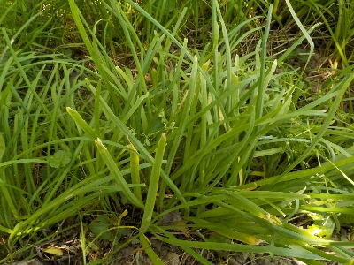
ニラを収穫しました。
洗って、刻んで、冷凍保存するんですが、手間がかかる割に量がかさばらないので少しなんですよね。
割が悪いな。
2024/05/26

ニラを収穫しました。
洗って、刻んで、冷凍保存するんですが、手間がかかる割に量がかさばらないので少しなんですよね。
割が悪いな。
2023/10/11
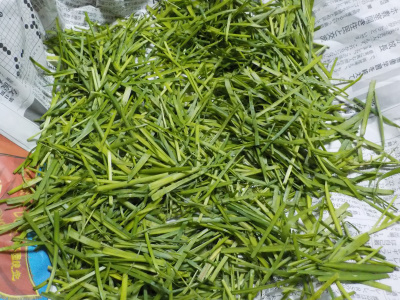
天気がいいのでカラカラに乾燥するかなと思ったんですが、駄目でした。
10月の気温だと難しかったようです。
2023/07/24
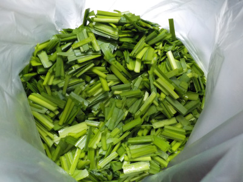
ニラ畑が雑草だらけになっていたので、草抜きをしました。
ついでにニラを収獲したんですが、沢山なので冷凍保存しました。
2023/04/09
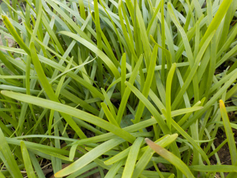
春になって育った若い葉っぱを収獲して食べました。
まだ風味が少なかったです。もうちょっと置いておいた方が良さそうです。
2022/09/18
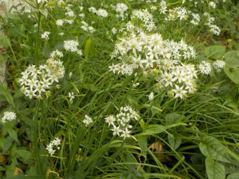
沢山咲きました。
種はいらないので花を見終わったら取ろうと思っていますが、面倒だなー。
でも面倒とか言ってたら何も出来ないので、ちょっとづつやろうと思います。
2022/09/04
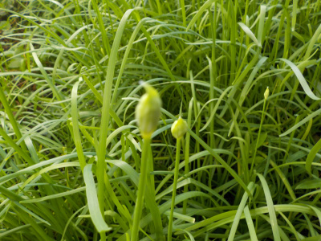
近ごろは収獲が面倒なので何もしていません。
なので沢山の花が咲く予定です。花を見て楽しもうと思っています。
2021/08/21
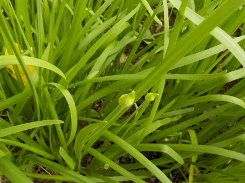
花芽が出来ましたが、まだ若いので簡単にちぎって取れます。
花が咲く前にドンドン食べてしまおうと思い、毎日ニラを食べています。
いろいろ料理してますが、美味しいですね。
2021/04/18
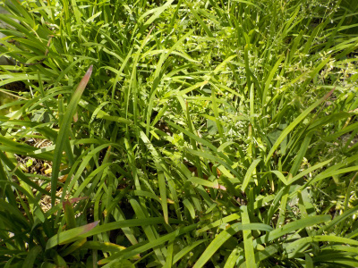
他に食べないといけない野菜が沢山あったのでニラは無視していましたが、だいぶ大きくなったじ雑草が生えてきたので少しずつ収獲して食べることにしました。
同じ場所に植えっぱなしですが、すくすく育ちますね。
2020/11/23
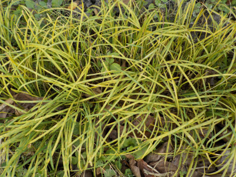
全部が黄色くなったわけではないですが、このエリア付近は黄色くなりました。
もう食べれませんね。
寒くなって枯れただけかな。
2019/09/14
夏野菜ばかり食べていたので、近頃ニラは食べていませんでした。
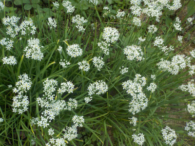
のびのび育って沢山の花が咲きました。
まだ夏野菜があるのでニラはこのまま花を観賞します。
2019/02/23
ニラも雑草も伸びてきたので、雑草を抜いて土寄せしました。
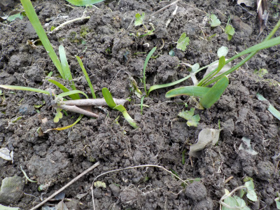
草を抜いて土がいっぱい見えると畑って感じがしますね。
光をいっぱい浴びて大きくなって欲しいです。
2018/11/18
種をまくつもりはないんですが、出来てるのでなんとなく収穫しました。
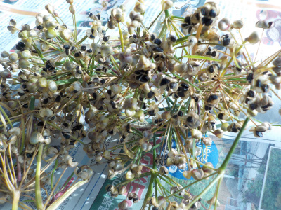
他の野菜の虫除け用に植えようかな？
2018/09/23
つぼみが出来たので一度収穫しましたが、再度つぼみが出来、花が咲きました。
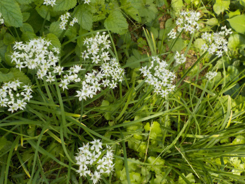
綺麗に咲いてる所は観賞用に放置することにしました。
2018/09/02
花が咲きそうなので、まとめて収穫しました。
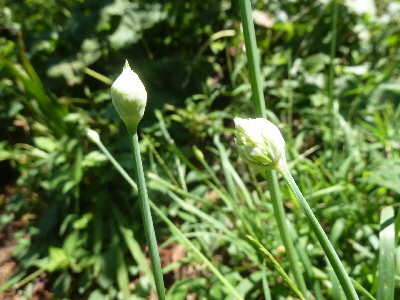
暑い時期は成長していなかったので、久しぶりの収穫でした。
2018/04/14
収穫できる大きさになりました。
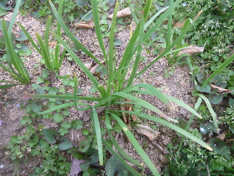
収穫するときにニラの香りがするんですが、あまりしませんでした。
今の時期はそんなものかな。
2018/03/18
ニラを株分けして畑を増やしました。
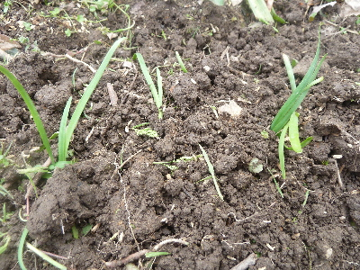
今回は1ｍですが、この冬ニラ畑の面積は倍増したので沢山収穫出来そうです。
ニラ料理を勉強しないと飽きるかも。
2018/02/04
ここらへんにニラが植えてあります。
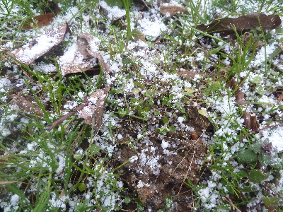
雑草は見えるんですが、ニラは分からなくなりました。
冬だな。
2017/08/26
ニラの蕾が出来ていました。
2017/05/20
種からのニラはひょろひょろです。
2017/04/08
ニラを収穫しました。
2017/03/12
ニラの土寄せをしました。
2017/02/18
ニラの株分けをしました。
畑仕事じゃないよ。